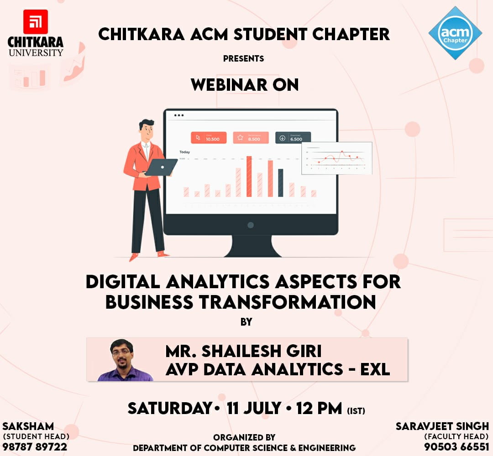
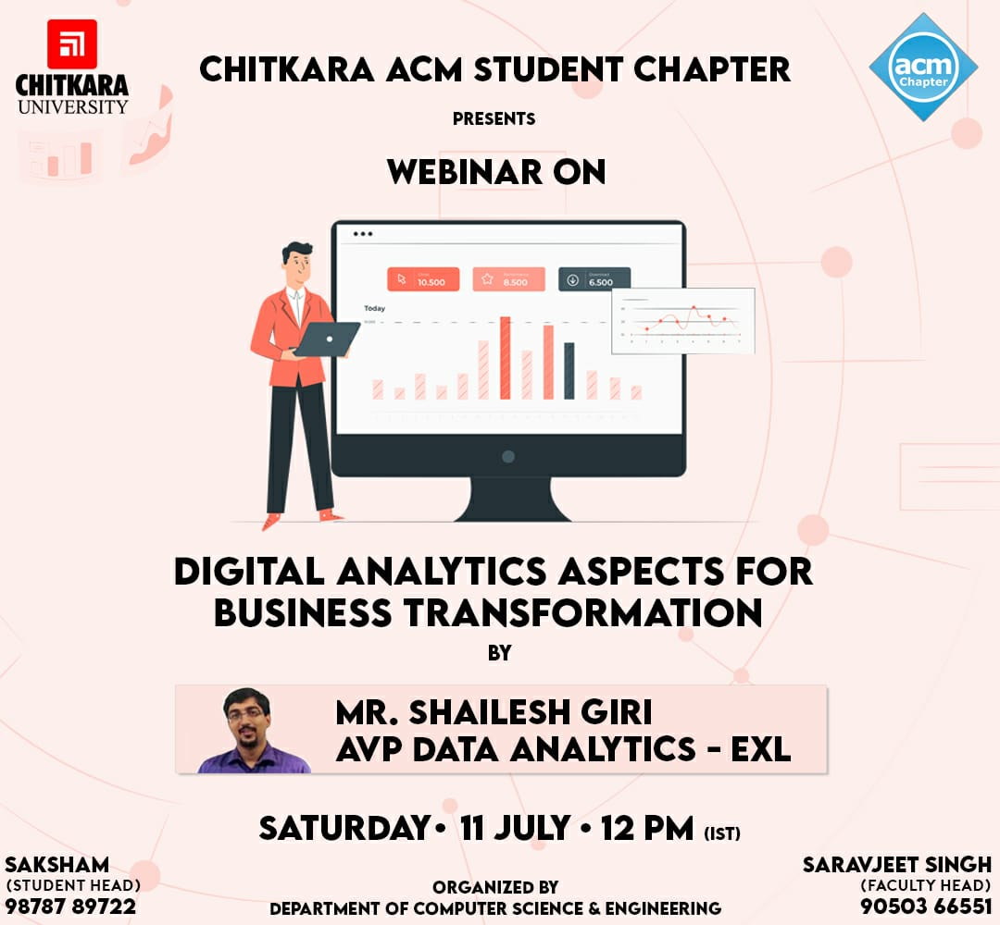
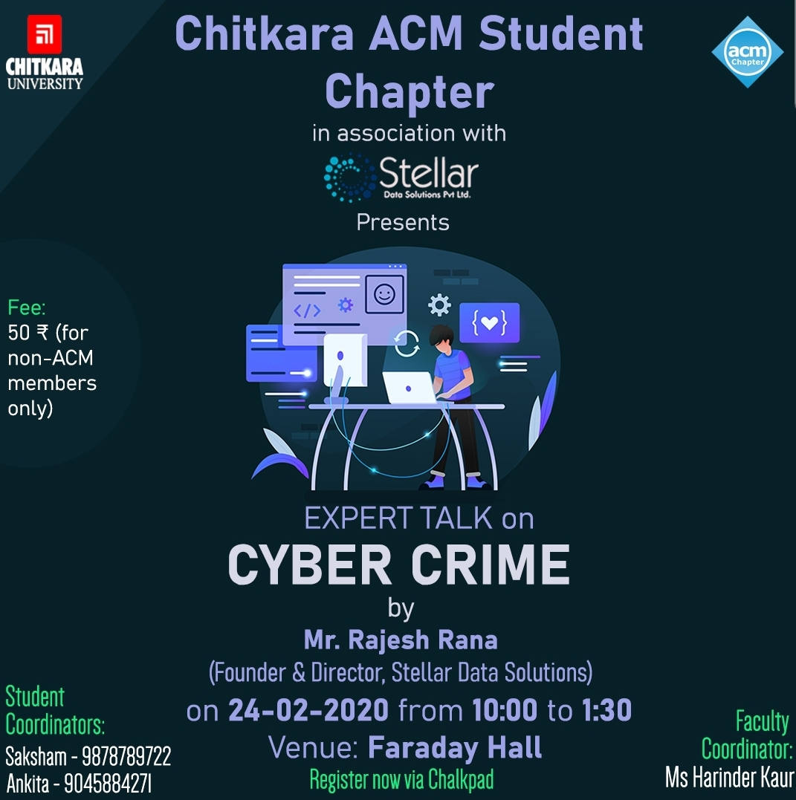
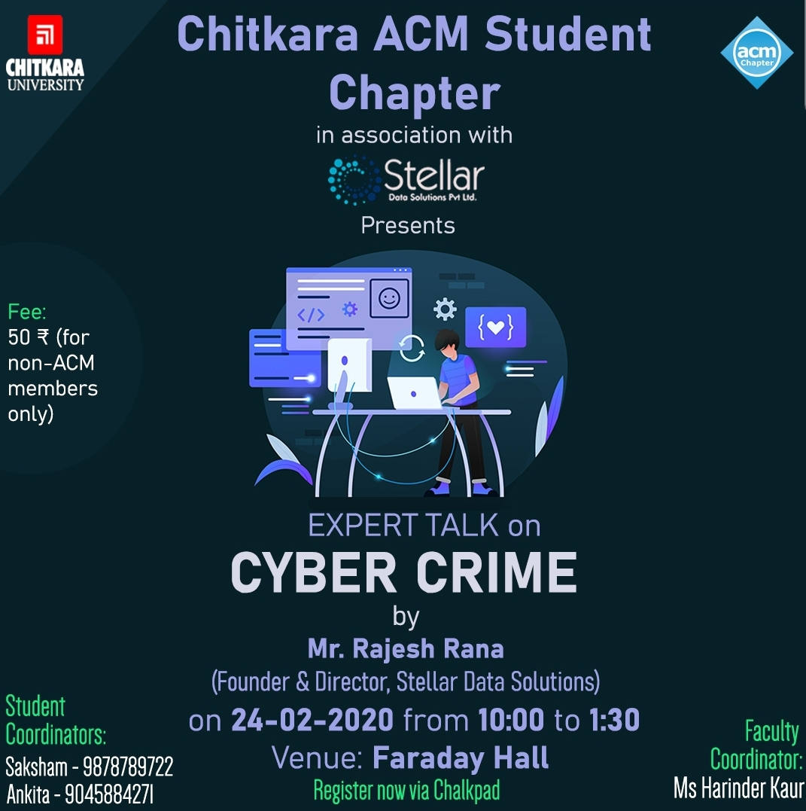

Chitkara ACM Student Chapter, in collaboration with the Department of Computer Science and
Engineering, organized “Hour of Code”, an innovative event on December 12, 2020, from 3:00 P.M
to 10:00 P.M, which emphasized relieving the week-long stress and work-load of students, with
fun-induced coding sessions rather than regular ones. Getting participation from nearly 61
students, the gathering was successfully handled by the department advisors and the members of
ACM. Games like Ozaria, a classroom-centered phylogeny of CodeCombat and one of the most
prevalent coding games in history, and Soccer-shots were arranged, which were well apprehended
by everyone.
Students actively reacted to the enigmas raised, as well as asked their doubts through the chat
option, which were taken up by specialists. Everyone was thrilled to play the games and learn
new ideas about coding au-courant. The top three performers were challenged to finish the game,
which provoked activity during the culmination of the session. The concourse ended with a vote
of thanks by the handling team. It was indeed an exhilarating, convivial, and enlightening
session.


 



 
